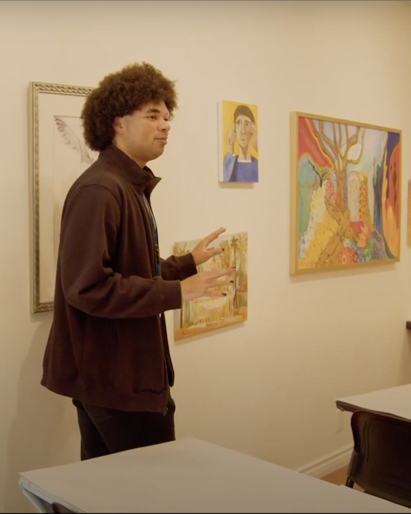
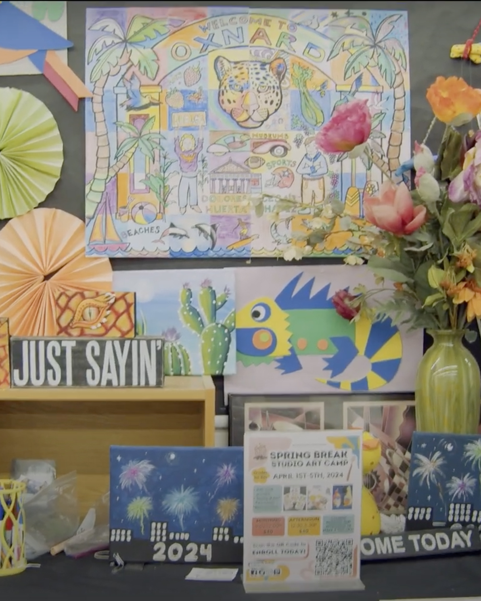
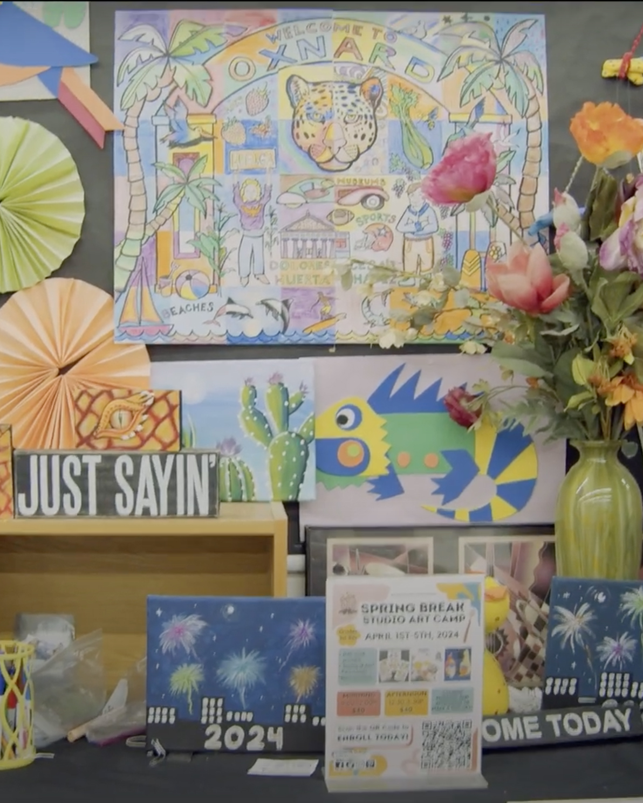
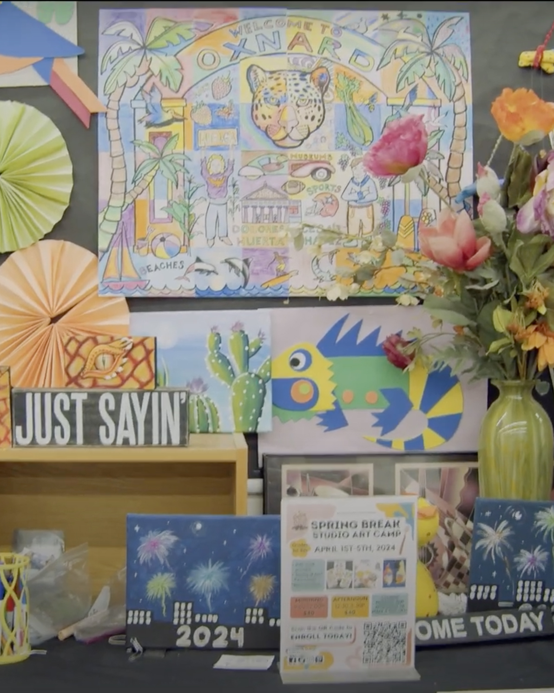
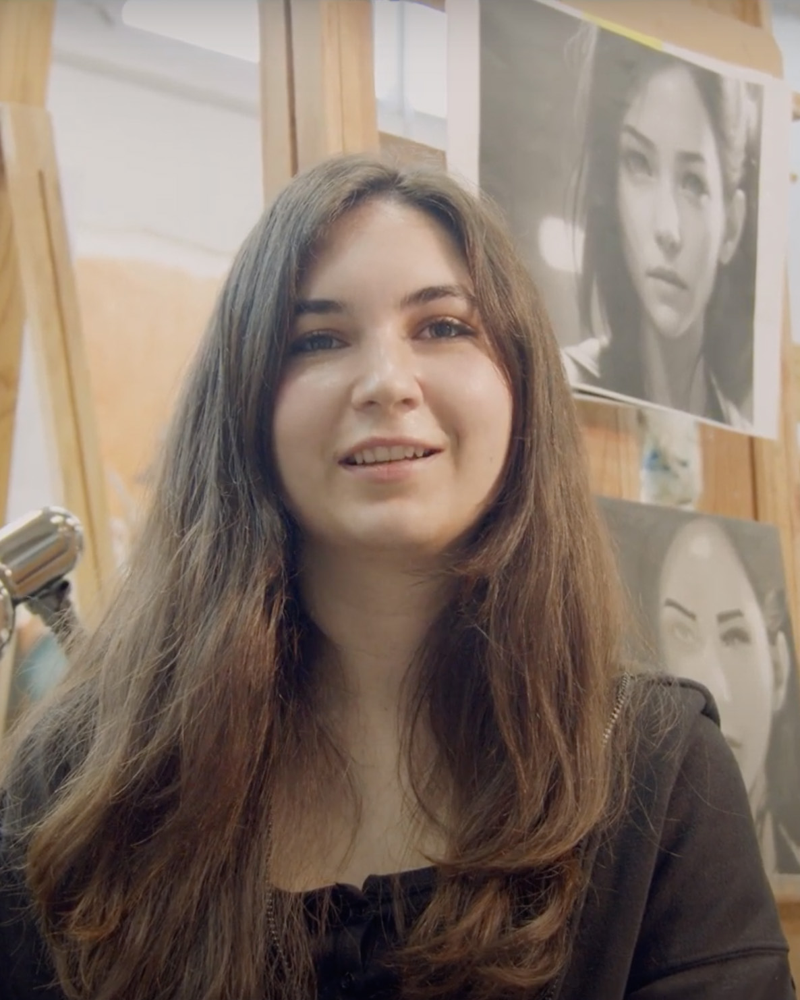
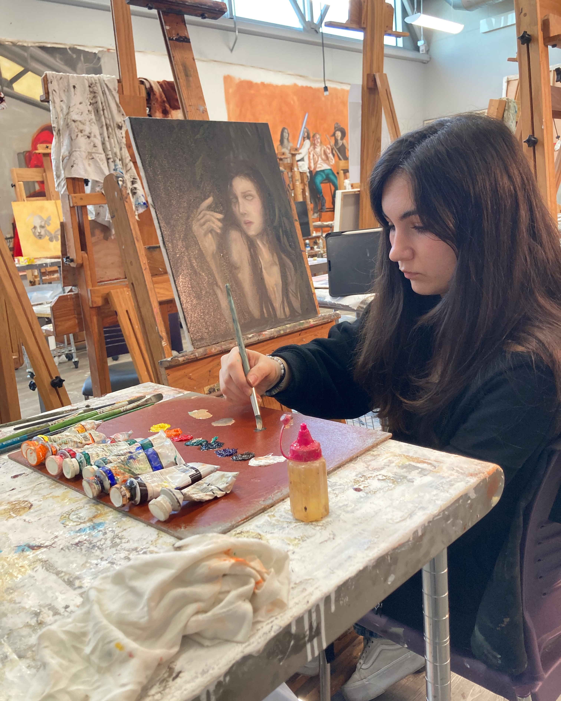
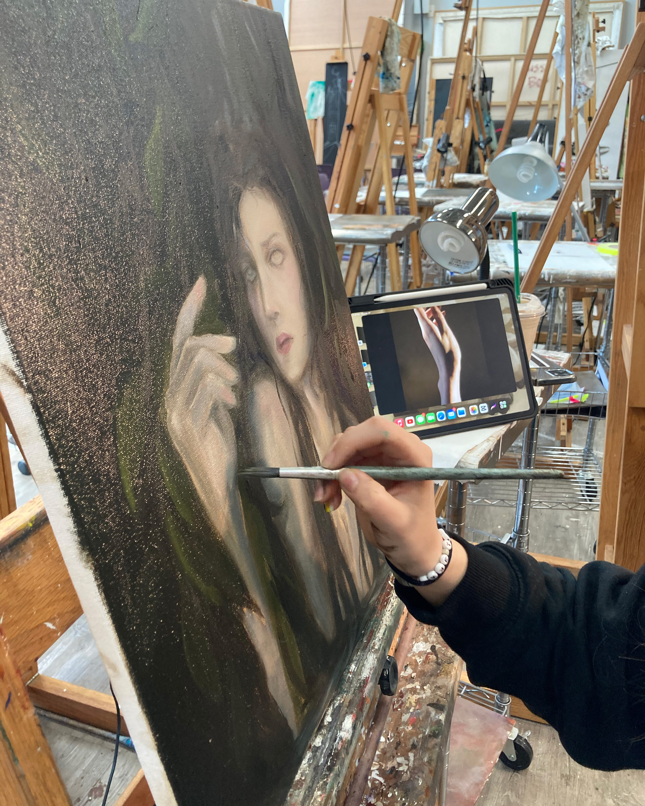

A Closer Look

 


Tenchi currently works as an art teacher, and in his spare time, he has been getting back into writing short stories, some movie scripts, and has new painting ideas as well. When Tenchi first came to CLU, he actually started off as an accounting major as per his father's suggestion. However, he quickly realized that math and business were not his forte, so he switched to English, where he fueled his passion for the creative arts. When he is creating art, he loves having people around him, not just because of the fun aspect and collaboration opportunities, but because he can learn from them and ask how to achieve certain techniques. Someday Tenchi dreams of creating some sort of an experience that has creative aspects to it.



Lilyana has always been a creative person, whether it was expressed through writing, dancing, or singing in choir. Now, as an upcoming graduate, she paints and illustrates detailed artwork. Some of her inspirations include William Waterhouse and his renaissance paintings, as well as her dad who works in constructions and was always building things from scratch. Growing up, she saw her father make things out of nothing, and that is what she thinks of when starting with her blank canvas. Lilyana's creative process begins from several sketches with raw ideas, and then she figures out which shares the best story. Then she creates a few more developed drawings before transferring them to the canvas, where she will paint out the final artwork. She enjoys working at the painting studio at the William Rolland Art Center, as the smells, textures, and paint on the ground puts her in the headspace to paint. When it comes to her painting themes, Lilyana shares she is inspired by her feelings, music, shows, and movie scenes.
Tips & Tricks
Tip 1
Don't worry about being perfect the first time. When you're working on a project, don't be afraid to try and mess up… If it's bad at first, you can refine, add to it, and make it better as you go.
– Tenchi
Tip 2
The whole process can be frustrating at first… the finishing touches make a big difference.
– Lilyana